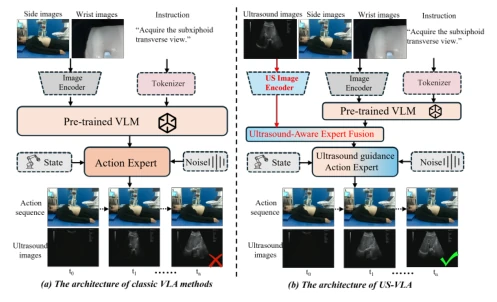
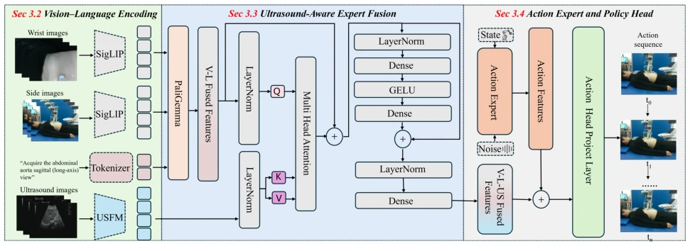
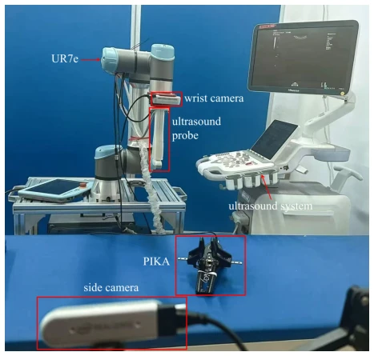
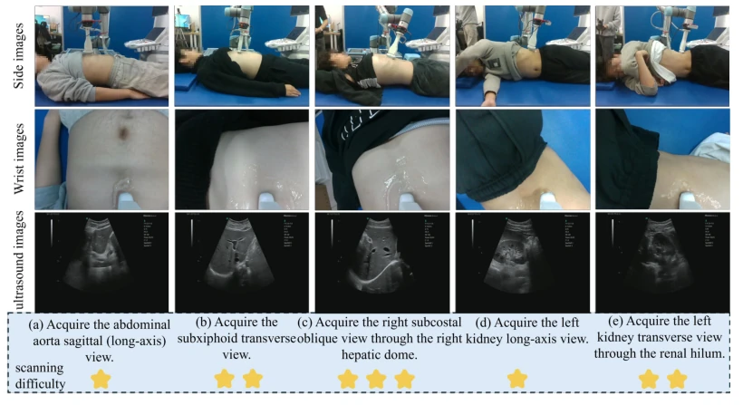
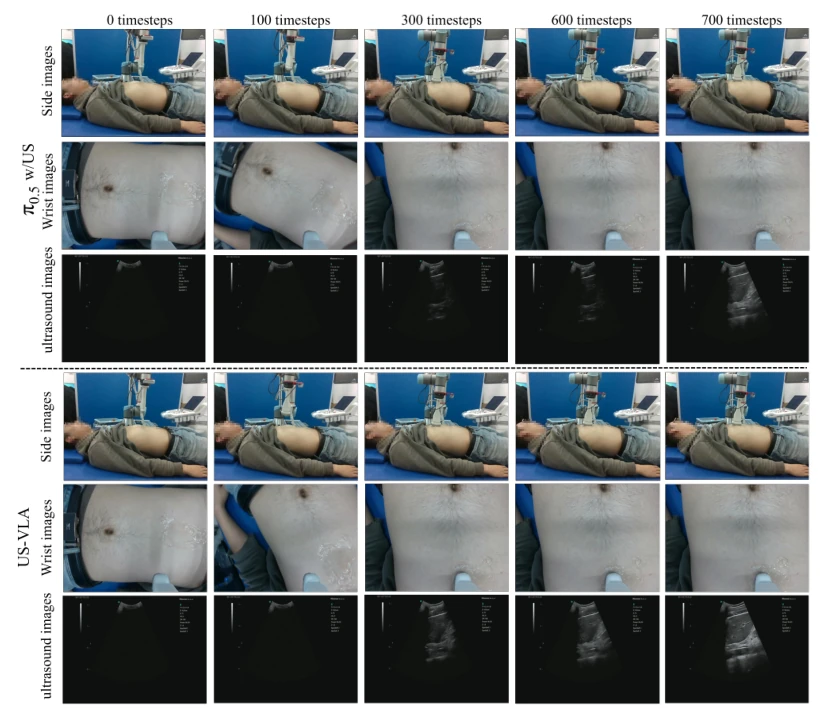
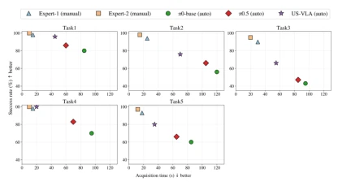
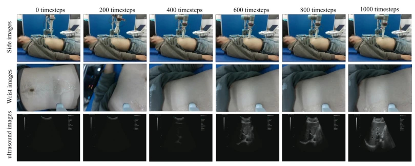
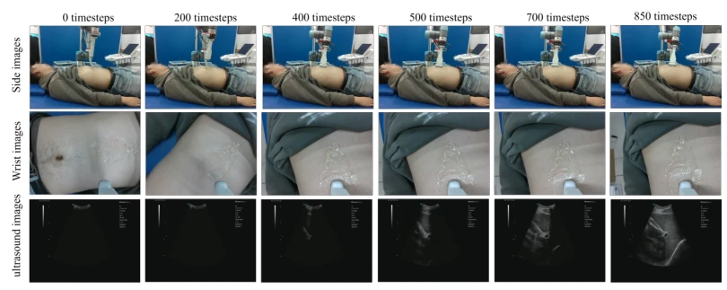
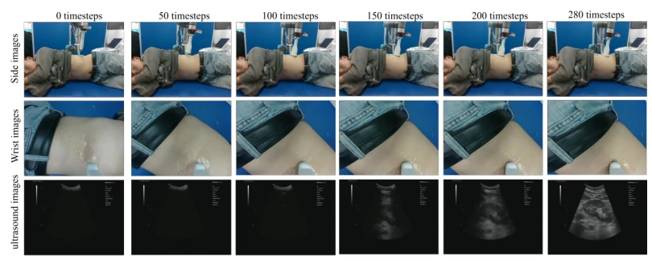
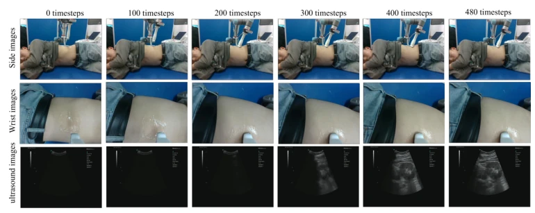

This paper essentially forces the VLA model into the "black box" of ultrasound scanning, attempting to use language instructions to directly command the robotic arm to find standard planes. The highlight lies in not relying on cumbersome reward function design like traditional RL, but instead introducing ultrasound images as closed-loop feedback, combined with clinical semantic goals, indeed understanding "seeing" ultrasound better than pure RGB VLA. However, do not get too excited, this is essentially imitation learning based on expert demonstrations, the data volume of 320 trajectories is considered small-sample in the VLA field, and only covers two organs, liver and kidney, far from a true "general ultrasound doctor". The dependency on robotic arms also limits its deployment in real clinical scenarios due to cost. Overall, it is a decent vertical domain attempt, but generalizability is questionable.
研究动机Motivation
现有 AI 辅助超声扫描主要分两类：基于强化学习的方法依赖精心设计的奖励函数，在解剖变异和真实约束下鲁棒性差 [11]；基于专家演示的学习方法虽稳定，但缺乏对高层临床目标的显式建模，难以适应新协议 [21]。现有的医学 VLA 系统多关注外部视觉下的物体操作（如器械传递），而非成像驱动的语义目标 [23]。超声检查的核心在于获取临床意义的标准切面，这需要实时超声反馈与语义目标的结合。因此，亟需一个能统一临床语义、实时感知与探头控制的 VLA 框架，解决现有方法泛化能力弱、缺乏临床语义建模的问题。
Existing AI-assisted ultrasound scanning is mainly divided into two categories: RL-based methods rely on carefully designed reward functions, with poor robustness under anatomical variations and real constraints [11]; expert demonstration-based learning methods are stable but lack explicit modeling of high-level clinical goals, making it difficult to adapt to new protocols [21]. Existing medical VLA systems mostly focus on object manipulation under external vision (e.g., instrument passing), rather than imaging-driven semantic goals [23]. The core of ultrasound examination lies in obtaining clinically meaningful standard planes, which requires the combination of real-time ultrasound feedback and semantic goals. Therefore, there is an urgent need for a VLA framework that unifies clinical semantics, real-time perception, and probe control to solve the problems of weak generalization ability and lack of clinical semantic modeling in existing methods.

Figure 1: Comparison between the architectures of classic VLA methods and the proposed US-VLA. US-VLA encodes ultrasound images and effectively integrates them with vi- sion–language features, facilitating more precise and reliable acquisition of standard ultrasound planes.
The overall architecture of US-VLA is divided into three parts: encoding, fusion, and decision. First, wrist and side-view RGB images are encoded via SigLIP, clinical instructions are embedded via language encoder, forming visual-language features. Second, ultrasound images are not directly fed into the natural image encoder, but extract anatomy and plane quality features through a specialized ultrasound foundation model USFM, avoiding domain differences. The core innovation lies in the Ultrasound Perception Expert Fusion Module (UAEF), which utilizes a cross-attention mechanism to inject ultrasound features as Key/Value into visual-language features, achieving modulation of semantic decision by real-time ultrasound feedback. Finally, fusion features are input to the action expert network, aggregated via residual branch, and continuous probe control instructions are generated by the policy head. The entire process achieves an end-to-end mapping from semantic goals to closed-loop action generation, ensuring action generation fits clinical intent and adapts to real-time imaging feedback.

Figure 2: The architecture of the US-VLA. The framework consists of three main components: (1) vision–language encoding for aligning clinical semantic goals with external visual observations, (2) ultrasound-aware expert fusion for injecting real-time ultrasound feedback into the decision process, and (3) an action expert and policy head for generating sequential probe manipulation actions under closed-loop ultrasound guidance.
A US-VLA-Data dataset was constructed, containing 320 expert trajectories and 80,000 synchronized steps, covering liver/kidney examinations and 5 standard planes. Experiments compared π0 series baselines, evaluation metrics were task success rate and scan steps. US-VLA average success rate reached 84.0%, significantly better than π0-base w/o US (52.7%) and w/ US (62.0%), and scan steps reduced by about 55%. Ablation studies show that introducing ultrasound input, USFM feature modeling, and UAEF fusion module all improve performance, among which UAEF has the most significant effect on shortening search trajectories. Additionally, compared with human experts of different experience levels, US-VLA performs excellently on time-success trade-off, proving its effectiveness and generalization potential in specific abdominal ultrasound scenarios.

Figure 3: Data Collection Setup.

Figure 4: Overview of the abdominal ultrasound scanning dataset and task difficulty levels.

Figure 5: Qualitative comparison results of our method and other methods on Task 1.

Figure 10: Time–success trade-off compared with human experts of different experience levels.
其他图片Other Figures

Figure 6: Qualitative visualization of our method’s scanning process on Task 2.

Figure 7: Qualitative visualization of our method’s scanning process on Task 3.

Figure 8: Qualitative visualization of our method’s scanning process on Task 4.

Figure 9: Qualitative visualization of our method’s scanning process on Task 5.